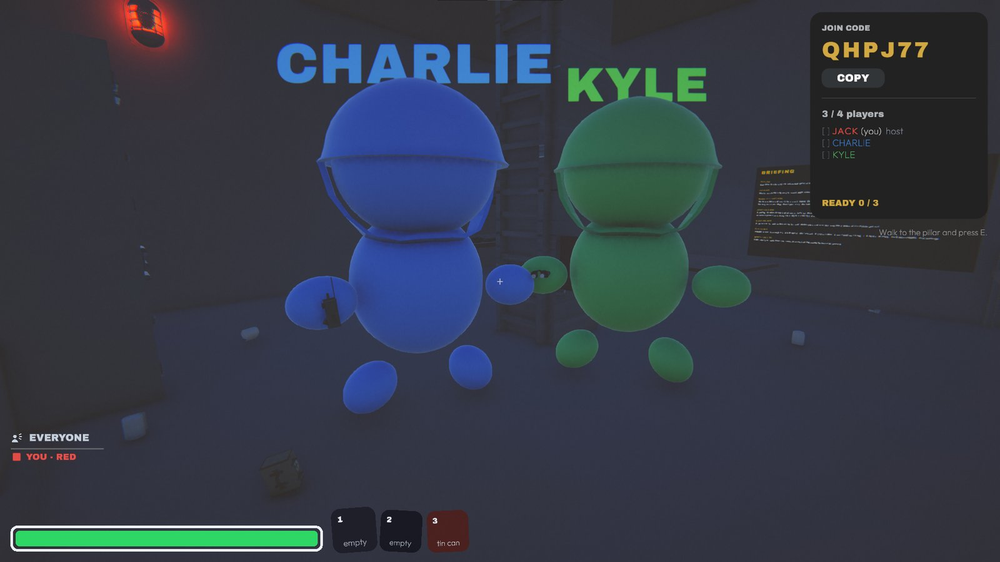

Cooperative action
Bob n' Steve
Four soldiers, one string, a field that wants you dead. A cooperative action game with a shared string as its central teamwork mechanic.

What I built
- Designed and implemented the shared-string mechanic linking the soldiers.
- Built the tin-can voice chat: private calls down the string to one teammate, sent as telephone-quality audio over Netcode.
- Built the mortar strikes and landmines, plus the injury effects, ragdoll and dragging of downed teammates.
My role
I focused on the systems that connect the players and make cooperation meaningful. The string needed gameplay logic that supported a group while staying readable and responsive in combat.
What I learned
Multiplayer-focused gameplay, explaining technical ideas within a team, and building mechanics that reinforce a game's core identity.
How it works
A rope that is simulated, not worked out
The string between players is simulated as an actual rope. It pays off a spool as you walk, falls under its own weight, catches on what it touches and stays where it lands. My first version stored the shortest path from the anchor to the player and recalculated it every frame. That was right about where a tight rope goes, but a shortest path has no slack, so it could never sag between two crates or lie in a loop behind you.
Two numbers to tune it
Tautness is how hard the rope pulls itself straight, from dead weight hanging in a deep curve to pulled tight against every corner. Elasticity is how quickly the spool takes slack back in when you walk back along the rope. Keeping them separate means the look of the rope and how forgiving it is to play with can be tuned independently. An optional tension mode makes the spool finite, so the last stretch drags and the end of it stops you.
Voice that travels down the string
Each player wears a colour, and the tin can dials one teammate's colour to talk to them. Audio is sent in 40 ms packets at telephone quality to the host, which forwards it only to the player being called, so a call is private rather than muted for everyone else. Both ends have to be tied on to an anchor first, which is what makes losing your line cost you something.
Mortars that ask a question
A mortar round is a whistle and a mark on the ground, a fuse long enough to react to, and then the burst. The server owns the timing and the damage. Every client is told once, up front, and plays the whistle and flash off its own clock, so a strike costs one network message instead of a stream of them.
- Server picks a target
- One message to every client
- Whistle and ground mark
- Fuse: time to move
- Burst, damage on the server
Screenshots


Play it
Like what you see?
I'm looking for my first games industry role as a gameplay or AI programmer. Studios of any size welcome.